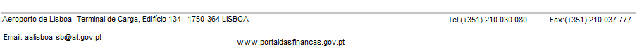

AUTO DE NOTICIA Nº 1990/2012 |
|
Aos 7 de Maio de 2012, Adré Gonçalves , Designr, a prestar funções no Sector de Controlo de Passageiros e Bagagem desta Alfândega, vem, em cumprimento do art. 57.º do Regime Geral das Infracções Tributárias (RGIT), aprovado pela Lei n.º 15/2001, de 5/2001, de 5/06, noticiar o seguinte: Aos 10 dias do mês de Dezembro do corrente ano apresentou-se, junto deste serviço aduaneiro, o (a) passageiro(a) Joaquina Ramelas, contribuinte fiscal n.º 1236789, residente em Só podes ter mel, na qualidade de representante da empresa Shé Toma Lhá, contribuinte fiscal n.º 1234532 e sede social em Marrocos de Baixo (no caso de se tratar de mercadoria com carácter comercial), com vista á obtenção da certificação de exportação dos bens adquiridos em território comunitário e transportados na sua bagagem pessoal. Acontece que a mercadoria não se encontrava acompanhada da declaração aduaneira de exportação conforme previsto no art.59.º do Código Aduaneiro Comunitário (CAC), estabelecido pelo Regulamento (CEE) n.º 2913/92 do Conselho, de 12 de Outubro. Foi permitido o embarque da mercadoria, sob controlo aduaneiro. A posteriori, concretamente, em 7/7/1941, foi entregue a declaração aduaneira de exportação com o n.º 1234543426878. Estabele o art5. 795.º das Disposições de Aplicação do Código Aduaneiro Comunitário (DACAC), aprovadas pelo Regulamento (CEE) n.º2454/93 da Comissão, de 02 de Julho que "A aceitação a posteriori dessa declaração (referindo-se á declaração aduaneira de exportação) não obsta á aplicação das sanções em vigor...". |
|  |